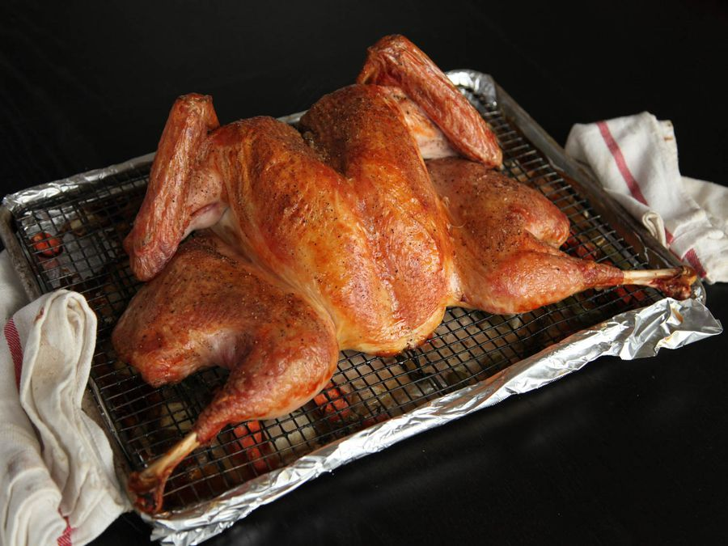
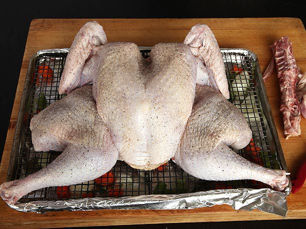
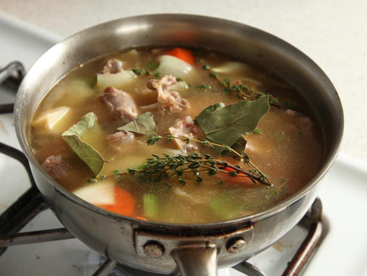
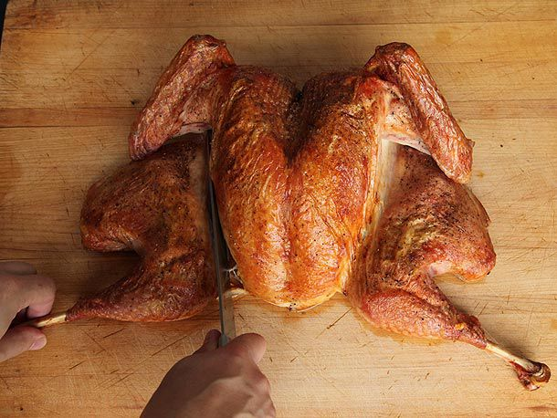

Spatchcock Roast Turkey with Gravy Recipe

Why does Spatchcocking a Turkey work?
Traditional methods of cooking a turket often leaves the breast meat dry by the time the dark meat has finished cooking. This is due to the fact that the breast meat is exposed during the cooking period whereas the dark meat is much more protected. But when Spatchcocking a turkey, the goal is to flatten the bird which allows much more even cooking and much more crispy skin, so we end up with a much more juicy bird.
Tools/Utensils
Ingredients
Cooking Directions
- Adjust over rack to middle position and preheat oven to 450°F. Line a rimmed baking sheet or broiler pan with aluminum foil. Scatter 2/3rds of your onions, carrots, celery and thyme sprigs across the bottom of the pan. Place slotted broiler rack or wire rack directly on top of the vegetables.
- Pat turkey dry with paper towels and rub on all surfaces with 1 tablespoon of oil. Season liberally on all surfaces with salt and freshly cracked black pepper. (if using a brined, salted, or Kosher turkey, omit salting step.) Tuck wing tips behind back. Place turkey on top of the wire rack, arranging so that it does not overlap the edges, pressing down on the breast bone to flatten the breasts slightly.

- Transfer turkey to oven and roast, rotating occasionally until an instant read thermometer inserted into the deepest part of the breast registers 150°F, and the thighs register at least 165°F, about 80 minutes.
- While turkey roasts, make the gravy. Roughly chop the neck, backbone, and giblets. Heat remaining 1 tablespoon of oil in a 3-quart sauce pan over high heat until shimmering. Add chopped turkey parts and cook, stirring occasionally, until lightly browned, should take about 5 minutes. Add remaining onions, carrots, and celery and continue to cook, stirring occasionally, until vegetables start to soften and brown in spots, another 5 minutes. Add in chicken or or turkey stock, remaining thyme, and bay leaves. Bring to a boil and reduce to a bare simmer. Allow to cook 45 miuntes, then strain through a fine mesh strainer into a 2-quart liquid measuring cup and discard solids. Skim off any fat from the surface of the broth.

- Melt butter over medium-high heat in a 2-quart saucepan. Add flour and cook, stirring constantly until flour is golden brown, takes around 3 minutes. Whisking constantly, add broth in a thing, steady stream until it is all incorporated. Bring to a boil, reduce to simmer, and cook until reduced to about 1 quart, about 20 more minutes of cooking. Season to taste with salt and pepper, cover, and keep gravy warm.
- When turkey is cooked, remove from oven and transfer rack to a new baking sheet. Allow to rest at room temperature for 20 minutes before carving. Carefully pour any collected juices from out of the roasting pan through a fine-mesh strainer into a liquid measuring cup. Skim off excess fat and discard. Whisk juices into gravy.
- Carve turkey and serve with gravy.

Resources
For additional help, please refer to this recipe.